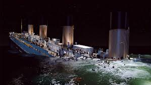
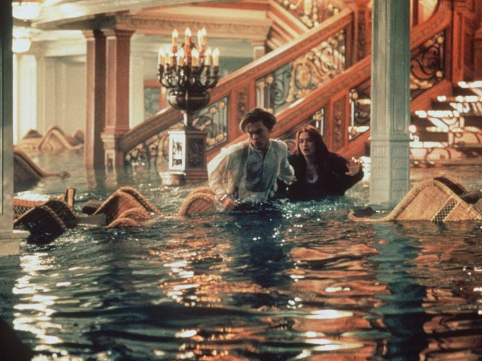
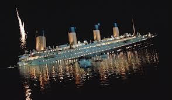

Title
Titanic
Actors
Leonardo DiCaprio as Jack Dawson, Kate Winslet as Rose DeWitt Bukater, Billy Zane as Cal Hockley, Frances Fisher as Ruth DeWitt Bukater, etc.
The film was released in 1997
Synopsis
Titanic is a 1997 American epic romance and disaster film directed, written, produced, and co-edited by James Cameron. Incorporating both historical and fictionalized aspects, it is based on accounts of the sinking of the RMS Titanic, and stars Leonardo DiCaprio and Kate Winslet as members of different social classes who fall in love aboard the ship during its ill-fated maiden voyage. Cameron's inspiration for the film came from his fascination with shipwrecks; he felt a love story interspersed with the human loss would be essential to convey the emotional impact of the disaster. Production began in 1995, when Cameron shot footage of the actual Titanic wreck. The modern scenes on the research vessel were shot on board the Akademik Mstislav Keldysh, which Cameron had used as a base when filming the wreck. Scale models, computer-generated imagery, and a reconstruction of the Titanic built at Baja Studios were used to re-create the sinking. The film was co-financed by Paramount Pictures and 20th Century Fox; the former handled distribution in North America while the latter released the film internationally. It was the most expensive film ever made at the time, with a production budget of $200 million. Upon its release on December 19, 1997, Titanic achieved significant critical and commercial success, and later received numerous accolades. Nominated for 14 Academy Awards, it tied All About Eve (1950) for the most Oscar nominations, and won 11, including the awards for Best Picture and Best Director, tying Ben-Hur (1959) for the most Oscars won by a single film. With an initial worldwide gross of over $1.84 billion, Titanic was the first film to reach the billion-dollar mark. It remained the highest-grossing film of all time until Cameron's Avatar surpassed it in 2010. A 3D version of Titanic, released on April 4, 2012, to commemorate the centennial of the sinking, earned it an additional $343.6 million worldwide, pushing the film's worldwide total to $2.195 billion and making it the second film to gross more than $2 billion worldwide (after Avatar). In 2017, the film was re-released for its 20th anniversary and was selected for preservation in the United States National Film Registry.
Age Restriction
16
  